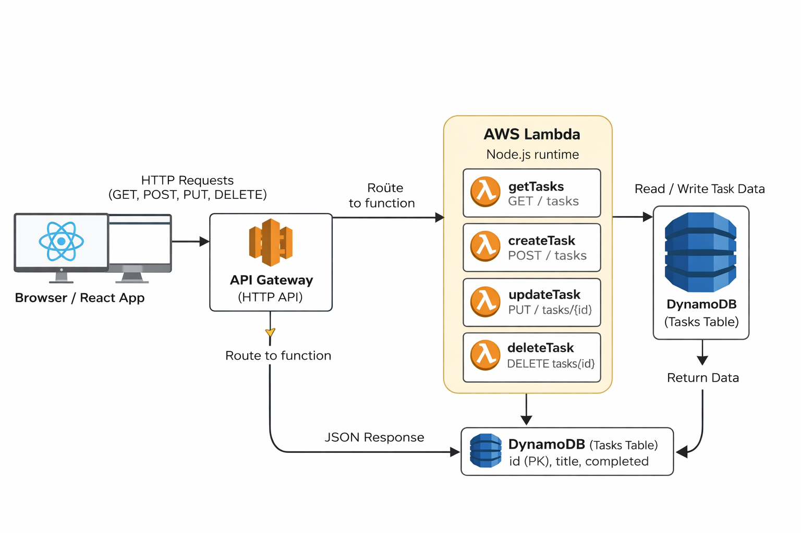
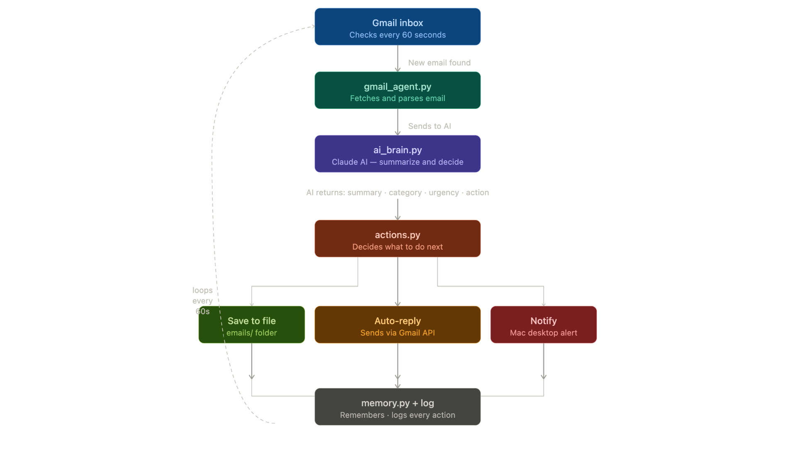
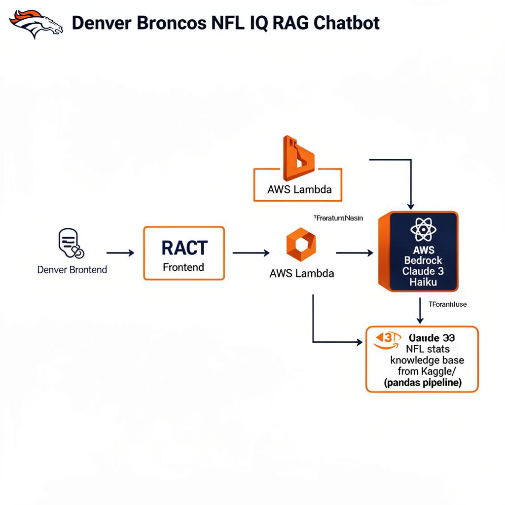
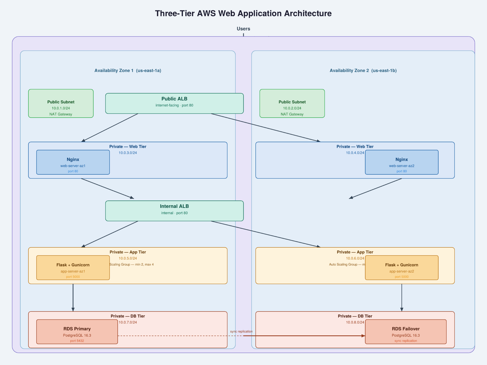
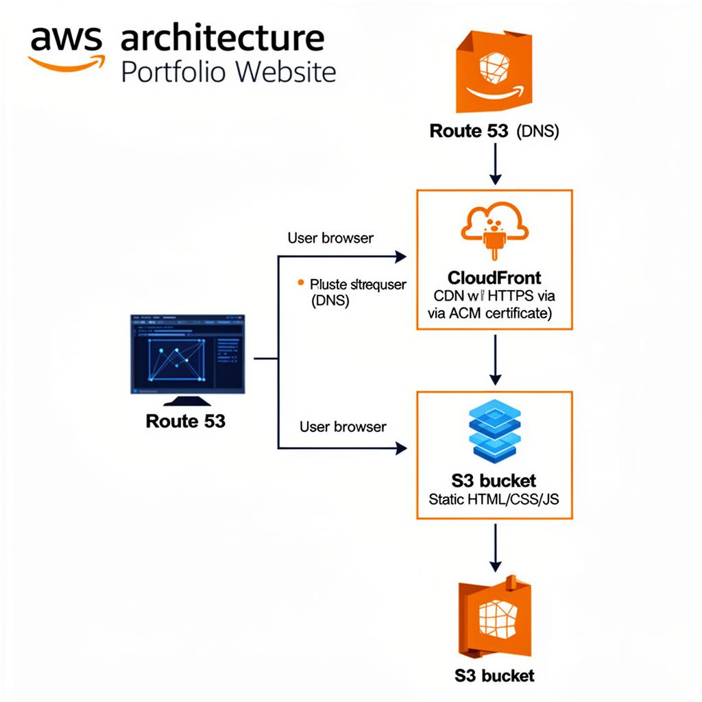

AWS Core Services
EC2, S3, Lambda, RDS, DynamoDB, VPC, IAM, CloudWatch
Computer Science Graduate · AI & ML Master's Student
Building secure and scalable systems on AWS
Download ResumeComputer Science student pursuing a B.S. and M.S. at Colorado State University – Global with concentrations in Artificial Intelligence and Machine Learning (GPA: 3.82). Currently transitioning into cloud engineering with hands-on experience in software development, front-end frameworks, and backend integration using Python, JavaScript, and TensorFlow.
AWS Certified Cloud Practitioner with a focus on designing secure, scalable, and cost-efficient cloud solutions. My key areas include:
EC2, S3, Lambda, RDS, DynamoDB, VPC, IAM, CloudWatch
CloudFront, Route 53, API Gateway, Load Balancing
CI/CD pipelines, root cause analysis, operational troubleshooting
Python, JavaScript, SQL
I bring problem solving, collaboration, and data driven optimization from both my software development and solar engineering experience. My goal is to apply these skills in cloud environments to modernize systems and deliver business value.
Denver, Colorado
B.S. & M.S. in Computer Science
March 2026
Built a full stack serverless task scheduler using React and TypeScript with an AWS backend powered by API Gateway, Lambda, and DynamoDB, implementing REST endpoints for full CRUD operations and scalable data storage. Diagnosed and resolved cross-service failures by fixing IAM permission issues, correcting a broken DynamoDB update pattern, and ensuring proper request payload handling.
View on GitHubBuilt an autonomous AI agent in Python that integrates with Gmail via Google's REST API and OAuth 2.0 authentication, using Claude AI (Anthropic) to automatically summarize, categorize, and score urgency of incoming emails. Architected across four decoupled modules using the Perceive, Decide, Act loop with automated Gmail API replies and real-time desktop notifications.
View on GitHubBuilt a Denver Broncos NFL IQ system using Python and pandas to process 17,000+ rows of NFL statistics into a structured knowledge base. Integrated AWS Bedrock (Claude 3 Haiku) via boto3 to ground AI responses in real Broncos data, eliminating hallucinations.
View on GitHubDesigned and deployed a production-grade three-tier web application on AWS from scratch, implementing enterprise cloud architecture patterns used across the industry. Built a custom VPC with 8 subnets across two availability zones, enforcing network segmentation between public, application, and database tiers. Deployed Python Flask application servers behind Gunicorn, fronted by Nginx reverse proxies and two Application Load Balancers — one public-facing, one internal. Configured EC2 Auto Scaling Groups with target tracking policies between 2 and 4 instances based on CPU utilization. Provisioned an encrypted Amazon RDS PostgreSQL 16 database in isolated private subnets with automated backups enabled.
View on GitHubDesigned and deployed a static portfolio website using S3 for storage and CloudFront for global content delivery. Configured Route 53 for custom domain routing and DNS management. Implemented HTTPS using AWS Certificate Manager and optimized delivery with CDN caching for low latency performance.
View Live SiteBrowse my repositories, contributions, and open-source projects
github.com/Aesher7Sunrun — Remote, Colorado
Qookit AI — Remote, Colorado
AWS system architecture designs and cloud infrastructure diagrams

AWS Serverless Task Management API

Gmail AI Assistant Agent

Denver Broncos NFL IQ

Three-Tier AWS Web Application

Static Website Deployment
I'm actively looking for cloud engineering opportunities. Feel free to reach out!